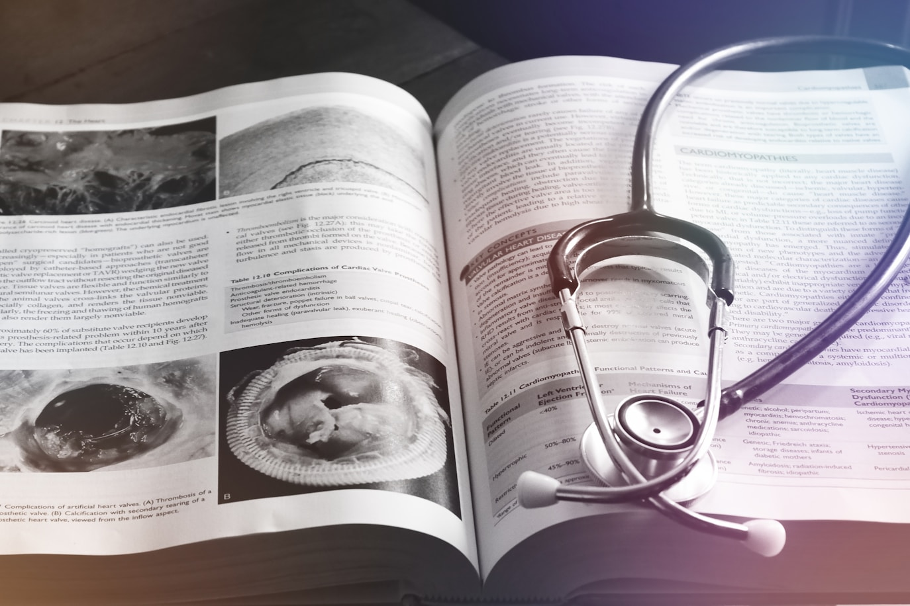
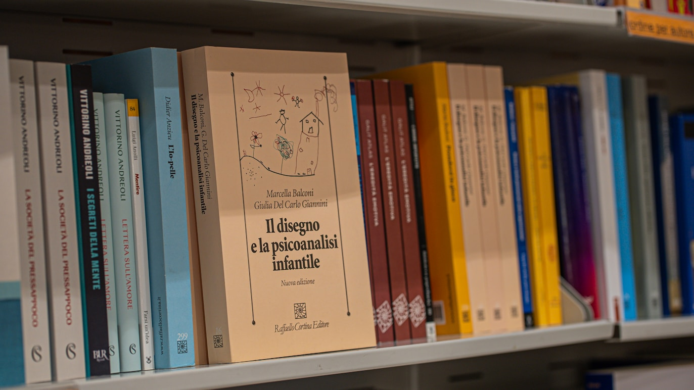

NUESTRA HISTORIA
Durante más de un siglo, el Departamento de Anatomía de la Facultad de Medicina de la Universidad de Minnesota (Minneapolis, MN) preparó, teñió y preservó meticulosamente muestras de tejido que revelan la microanatomía de células y tejidos humanos. Estas láminas son más que simples secciones de tejido; representan un legado de excelencia de generaciones de miembros del departamento.
Este recurso se basa en una larga trayectoria docente en la Universidad de Minnesota. La colección docente se desarrolló durante las décadas de 1950 y 1960 bajo la dirección de Anna-Mary Carpenter, Ph.D., M.D. Se hizo más accesible gracias a la publicación de Human Histology: A Color Atlas de Anna-Mary Carpenter, Ph.D., M.D., publicada en 1968. También sirvió como fuente principal de las micrografías ópticas para el Color Atlas of Histology, de Stanley Erlandsen, Ph.D., y Jean Magney, M.S., publicado en 1992.


Para presentar una gama más amplia de especímenes y avances en impresión en color, publicamos el Atlas de Histología Humana: Guía de la Estructura Microscópica de Células, Tejidos y Órganos. Cada ejemplar se presenta como una serie de fotografías a aumentos crecientes para proporcionar contexto y una sensación de escala y proporción. Este atlas ofrece a cada estudiante un resumen impreso accesible de las diapositivas esenciales de este sitio.
Aunque los libros de texto y atlas tradicionales ofrecen imágenes valiosas, no pueden sustituir la experiencia de ver un espécimen entero a través de un microscopio. La Guía de Histología cierra esta brecha presentando las láminas de microscopio en un formato virtual que fomenta la exploración. Cada diapositiva de nuestra colección digital ha sido cuidadosamente seleccionada por su excelente conservación, tinción de alta calidad y capacidad para demostrar características estructurales clave. Durante más de cinco décadas de docencia, se produjeron muchas láminas adicionales de microscopio por nosotros, otras instituciones y colaboradores individuales. Stanley Erlandsen, Ph.D., dirigió una instalación central para microscopía electrónica. Este sitio presenta gran parte de su propio trabajo, junto con numerosas imágenes recogidas de sus colegas, para apoyar la educación en histología. Agradecemos mucho a nuestros estudiantes que brindaron el impulso y la orientación para crear una presentación de histología que facilita su adquisición de conocimientos sobre la estructura microscópica de células, tejidos y órganos. Fueron los estudiantes quienes nos enseñaron la mejor manera de enseñarles.